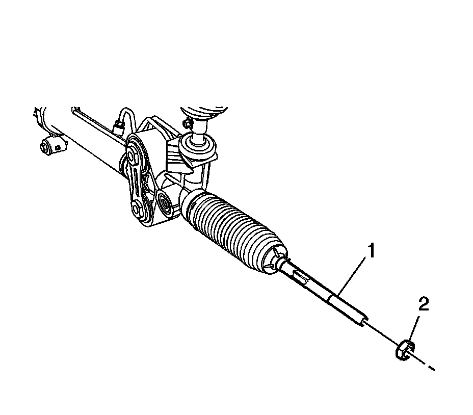
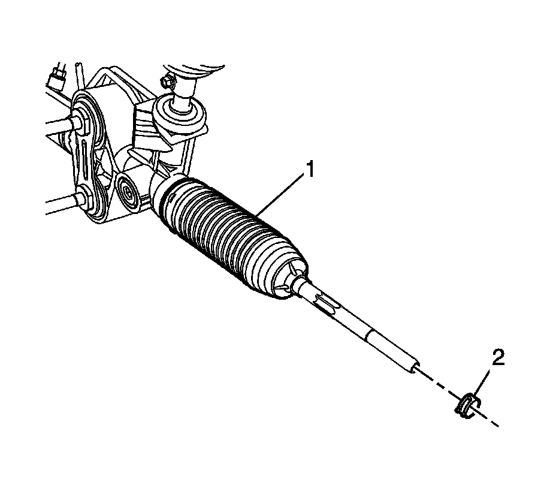
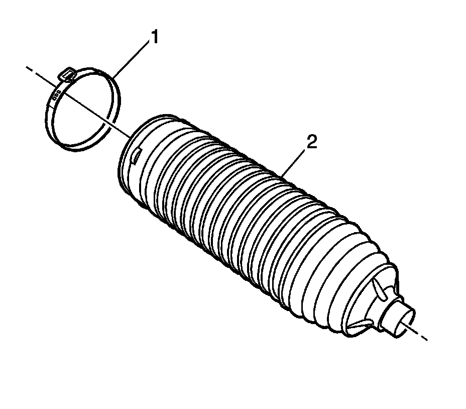
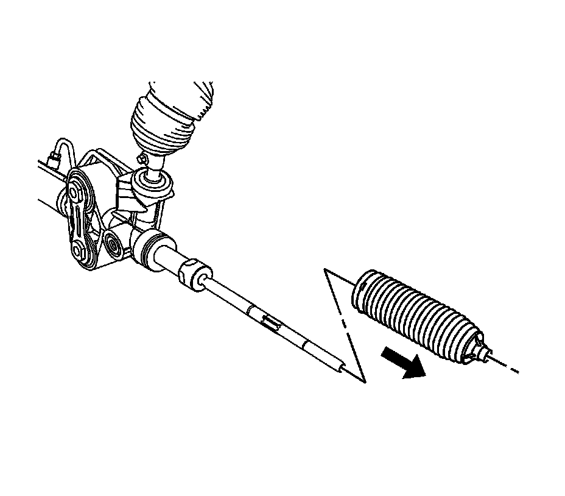
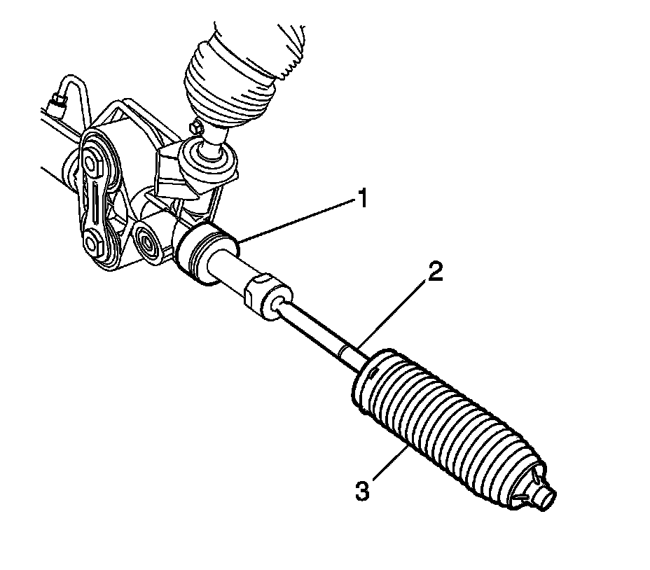
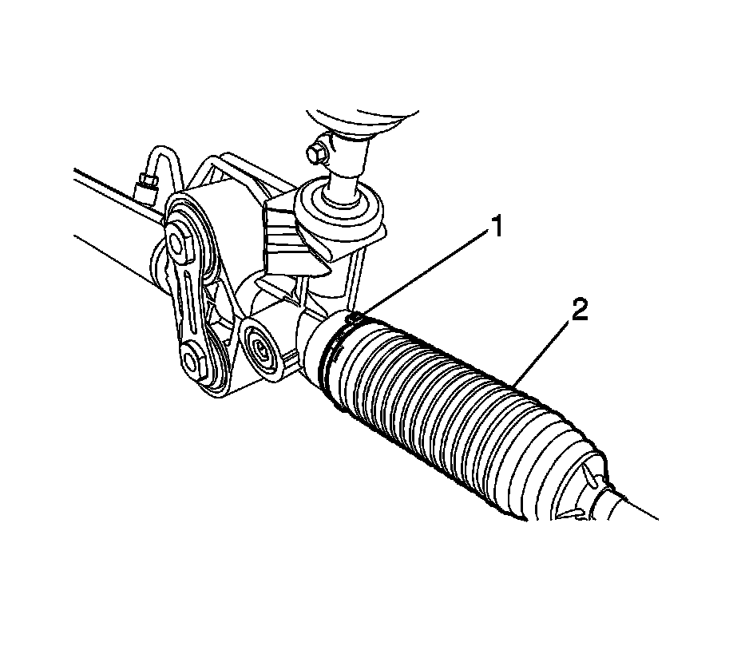

Tie Rod Boot: Service and Repair
Rack and Pinion Boot Replacement
Tools Required
J 22610 Keystone Clamp Pliers
Removal Procedure

1. Remove the outer tie rod.
2. Remove the hex jam nut (2) from the inner tie rod assembly (1).

3. Remove the tie rod end clamp (2) from the rack and pinion boot (1).

4. Remove the boot clamp (1) from the rack and pinion boot (2) with side cutters.
5. Discard the boot clamp (1).

6. Remove the rack and pinion boot from the rack and pinion gear assembly.
Installation Procedure
1. Install the new boot clamp (1) onto the rack and pinion boot (2).

2. Prior to rack and pinion boot installation, apply grease to the inner tie rod assembly (2) and the rack and pinion gear assembly (1).
3. Install the rack and pinion boot (3) onto the inner tie rod assembly (2).
Important: The rack and pinion boot (3) must not be twisted, puckered or out of shape in any way. If the rack and pinion boot (3) is not shaped properly, adjust the rack and pinion boot (3) by hand before installing the boot clamp.
4. Install the rack and pinion boot onto the gear assembly (1) until the rack and pinion boot (3) is seated in the gear assembly groove.

5. Crimp the boot clamp (1) with J 22610 or equivalent.
6. Pinch the pliers together on the rack and pinion boot (2) in order to install the tie rod end clamp.
7. Compress the clamp (2) and install it onto the rack and pinion boot (1).
8. Install the hex jam nut (2) to the inner tie rod assembly (1).
9. Install the outer tie rod assembly.